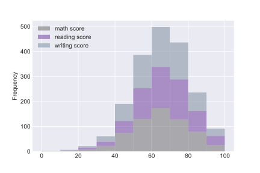
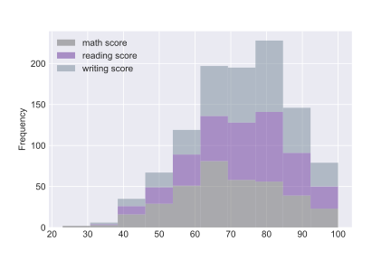
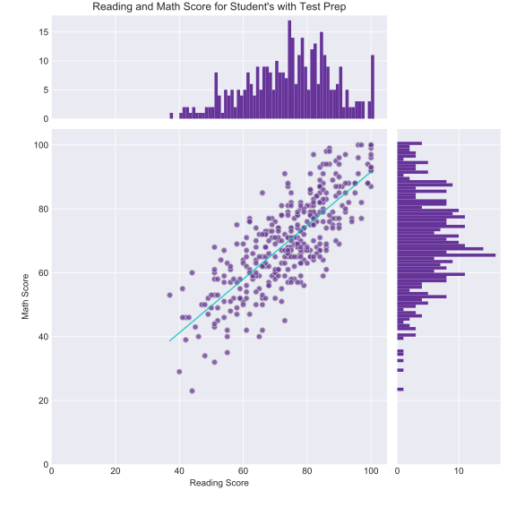

Analysis
Deepest

Frequency of Scores without Test Prep
This histogram shows us the distribution of students scores without test prep
This gives us some good information about not only the average score, but also how many students were doing well and how many student's scores could still be improved.

Frequency of Scores with Test Prep
This histogram shows us the distribution of students scores with test prep
Compared to the histogram above, the first thing that stands out is the total number of students. We've seen this on every graph after the averages but it is made clearer with this graph. Even with the lower number of students, we can see the number of students doing well has increased with test prep. The highest number of students score almost 10 points higher than the highest above.
This is indicative of a positive trend but to visualize this trend better, we should combine everything so far into one picture.
Expanding Our View
This is a visualization without the benefit of test prep

This is a visualization with the benefit of test prep

Now we can see everything we've concluded so far in one visualization with one addition: the fit line. This line will tell us how the two groups (math scores, reading scores) correlate to eachother. The slope of this line tells us at what rate the students' scores are improving, and the intercept of this line would tell us the point at which the group would reach zero for both scores.
| No Prep | slope | intercept | r-value | p-value | standard error |
|---|---|---|---|---|---|
| Statistics | 0.8613 | 6.766 | 0.821 | 2.751e-157 | 0.024 |
| With Prep | slope | intercept | r-value | p-value | standard error |
|---|---|---|---|---|---|
| Statistics | 0.841 | 7.597 | 0.793 | 8.935e-79 | 0.034 |